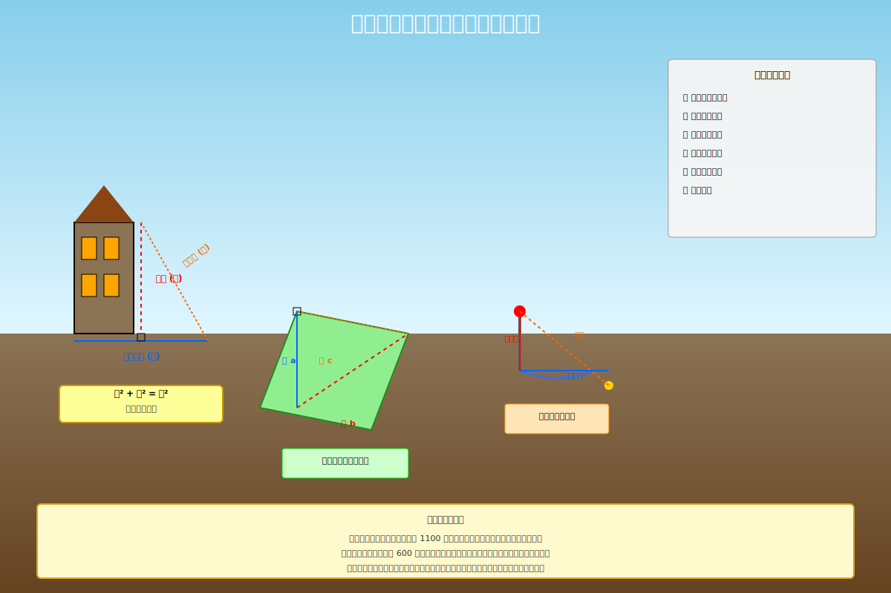
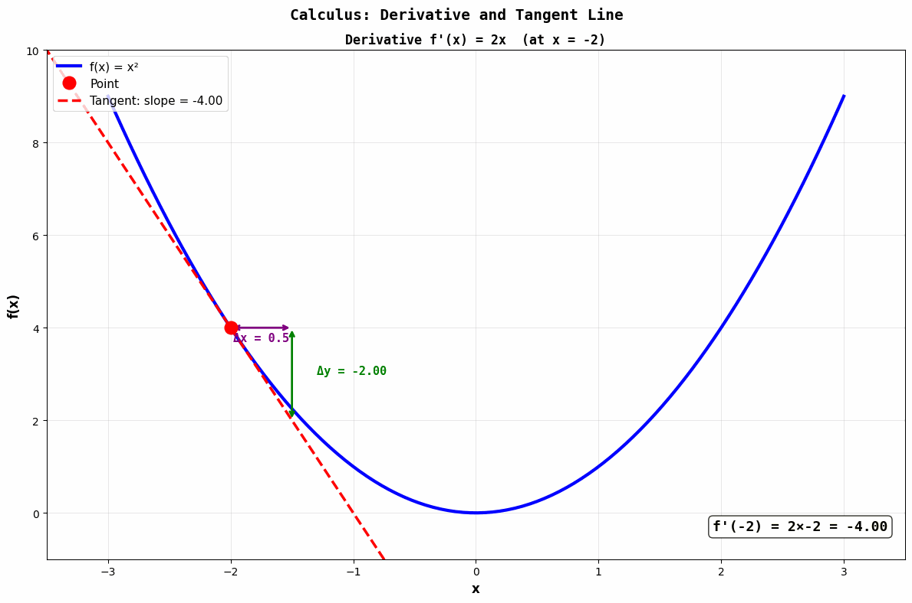
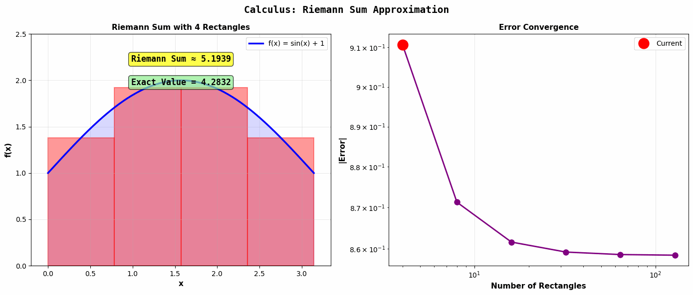

🌏 東方數學
中國古代數學源遠流長。從遠古結繩記數，到甲骨文上的算術，再到《九章算術》的輝煌，東方數學發展出獨特之路。算盤、負數、方程組、圓周率之精算——皆為世界之瑰寶。
🌍 西方數學
古希臘數學注重邏輯演繹。歐幾里得《幾何原本》確立了公理化方法。而後文藝復興與科學革命時期，微積分誕生，牛頓與萊布尼茲各領風騷。西方數學逐漸成為科學之語言。
🔄 相互啟蒙
近代以來，中西數學相融相通。算法源自阿拉伯，代數東傳入華。而今世界數學一體，求真理者不分東西。未來之數學，必為中西之精華薈萃。
🔍 思維方式
🏯 東方（實用為先）
• 注重計算技巧
• 解決實際問題
• 歸納與實驗
• 算盤與珠算
🏛️ 西方（理論為先）
• 重視邏輯證明
• 追求純粹理論
• 演繹與嚴謹
• 文字與公式
📚 經典成就
🏯 中國數學
• 《九章算術》
• 負數運算
• 圓周率精算
• 魔方陣
🏛️ 西方數學
• 《幾何原本》
• 勾股定理證明
• 微積分
• 非歐幾何
🌟 融合之境
現代數學已超越東西之分。計算機時代降臨，東方之算術精神與西方之邏輯嚴謹相融相通。未來數學將更加一統，求真理者共襄盛舉。
🏯 東方數學家
📖 劉徽（約 220-280）
中國古代數學家。著《九章算術注》，創造割圓法計算圓周率，得 π ≈ 3.14159。
📖 祖沖之（429-500）
南北朝數學家、天文學家。將圓周率精算至小數點後七位，1000 年間無人超越。
📖 李冶（1192-1279）
元代數學家。著《測圓海鏡》，開創中國代數學先河，創「天元術」。
🏛️ 西方數學家
📖 歐幾里得（約 前 325-前 265）
古希臘數學家。著《幾何原本》，確立公理化方法，影響深遠。
📖 牛頓（1643-1727）
英國物理學家、數學家。與萊布尼茲各自獨立創立微積分，推動科學革命。
📖 歐拉（1707-1783）
瑞士數學家。多產至極，涉獵數學各領域。著作 886 篇，迄今仍有新編。
📚 商高定理與勾股定理：中西之美
分類：古代數學
人物：商高, 畢達哥拉斯, 歐幾里得
🔍 商高定理與勾股定理
直角三角形的三邊滿足 a² + b² = c²。中國謂之「商高定理」，西方稱「勾股定理」。
 圖一：商高定理與勾股定理的幾何表示
圖一：商高定理與勾股定理的幾何表示
🏯 中國：商高定理
《周髀算經》記：「勾三股四弦五」。商高（約前 1100 年）傳為首先發現此關係之人。中國稱直角邊為「勾」「股」，斜邊為「弦」。
🏛️ 西方：勾股定理
畢達哥拉斯（前 500 年）被認為首先証明此定理。歐幾里得《幾何原本》第 I 卷載最著名之証明。
📊 中西對比
- 中國：注重計算應用
- 西方：注重邏輯証明
- 共通：皆認此定理之重要
⚡ 影響
奠定幾何學基礎，開啟三角學之門。測量、建築、天文，無所不用其極。

圖二：商高定理的古代應用：測量、田地、防禦設施
更新時間：2026-03-01 09:30 UTC
📚 圓周率之謎：阿基米德與割圓法
分類：古代數學
人物：阿基米德, 劉徽, 祖沖之
🔍 圓周率的追求
π 是圓周長與直徑之比。自古以來，數學家追求其精確值，卻發現此數永遠無盡。
🏛️ 阿基米德的邊界法
古希臘數學家阿基米德（前 287-212 年）使用內接和外接正多邊形，逐步逼近圓周。得出 3 1/7 < π < 3 10/71，即 π ≈ 3.14。
🏯 劉徽的割圓法
中國數學家劉徽（220-280 年）創造「割圓法」。用正多邊形割圓，邊數越多，越逼近圓周。計算出 π ≈ 3.14159。
🌟 祖沖之的不朽成就
祖沖之（429-500 年）精算 π 在 3.1415926 至 3.1415927 之間，此精度保持 1000 年無人超越！且得兩分數近似：22/7 和 355/113。
更新時間：2026-03-01 10:00 UTC
📚 代數學的起源：九章算術 vs 花拉子米
分類：古代數學
人物：張蒼, 花拉子米, 卡爾達諾
🔍 方程與未知數
代數學關乎用符號表示未知數，並求解方程。東西方古人各自探索此藝。
🏯 中國的九章算術
《九章算術》（約前 200 年編成）乃中國古代數學之集大成。其中「方程」一章論述線性方程組之求解，已用籌算（早期之計數方法）進行消元。
🌙 阿拉伯的花拉子米
花拉子米（約 780-850 年）著《代數學簡論》，標題中 Al-Jabr（合併）一詞遂成「代數」（Algebra）之源。此書系統化論述一次、二次方程之解法。
📊 東西異同
- 中國：用算盤與籌算，實踐導向
- 阿拉伯：用文字敍述與幾何，理論導向
- 西方：後來融合兩者，創造符號代數
更新時間：2026-03-01 10:30 UTC
📚 幾何學的分岔：歐幾里得與實用之學
分類：古代數學
人物：歐幾里得, 劉徽, 海倫
🔍 圖形與空間
幾何學研究圖形、面積、體積。東西方發展路徑差異大，卻殊途同歸。
🏛️ 歐幾里得的公理化
古希臘數學家歐幾里得（約前 300 年）編著《幾何原本》，從 5 條公理出發，用邏輯推演演繹出 465 條命題。此法成為數學之典範——從假設到結論，環環相扣。
🏯 中國的實用幾何
中國幾何學更重實踐應用。如何測量田地、修建堤壩、製造器具？《九章算術》論述各類圖形面積與體積計算。不求証明，重求答案。
📊 兩條路的特點
- 歐幾里得：嚴謹、抽象、演繹
- 中國：直觀、具體、歸納
- 現代：兩者融合，相輔相成
更新時間：2026-03-01 11:00 UTC
📚 古代計算工具：算盤與籌算的智慧
分類：古代數學
人物：暫無具體人物, 計算工具發明者
🔍 心算之輔
未有紙筆之時，人類如何進行複雜計算？各文明創造工具，以輔助心算。
🏯 中國的籌算與算盤
籌算（約前 500 年出現）乃竹籤排列成數字。後來演變為算盤（abacus），珠子串成，滑動即可計算。算盤精妙之設計，千年不衰。至今東亞仍有人精於珠算。
🏛️ 西方的羅馬數字
I, V, X, L, C, D, M 雖易辨識，但計算困難。故古羅馬人多用手指計算或塵盤（撒沙可塗寫）。後來採用阿拉伯數字後，計算效率大增。
⚡ 工具的力量
工具非純輔助，乃能改變思維方式。算盤之使用，催生籌算與珠算之技藝，並影響數字系統之設計。
更新時間：2026-03-01 11:30 UTC
📚 零的發明：東方的偉大禮物
分類：古代數學
人物：印度數學家, 阿拉伯傳播者, 歐洲接受者
🔍 無即有
零非自明之物。人類用長期方悟：無物可用一符號表示，並參與計算。
🌙 印度的零
印度數學家（約 5 世紀）首次將零視為數字，納入計算系統。此乃劃時代之進步——使十進制記數法完整而高效。
🏯 中國的空位
中國古人在籌算中用空位表示零，但未將零視作獨立數字。至傳入印度概念後，方得完全理解。
🌙 阿拉伯的傳播
花拉子米與其他阿拉伯數學家採納印度零的概念，並傳入歐洲。歐洲教會曾反對零，認為違背自然。然終究接納。
⚡ 零的力量
零使數字系統更完整、計算更便利。無零，則無現代科技。此東方數學之大禮。
更新時間：2026-03-01 12:00 UTC
📚 負數的認識：從違背直覺到接納真理
分類：古代數學
人物：劉徽, 卡爾達諾, 邦貝利
🔍 小於零
負數挑戰直覺——如何擁有負個蘋果？然數學要求超越現實。
🏯 中國的赤黑計數
中國古人用不同顏色或形狀表示正負。劉徽（220-280 年）明確定義負數，並建立運算法則。用籌算表示：紅籌為正，黑籌為負。
🏛️ 西方的遲疑
古希臘與古羅馬未真正接納負數。中世紀歐洲視負數為「不可能之數」。直至 16 世紀，卡爾達諾與邦貝利方開始認真對待。
📊 認識之進程
- 古代中國：實踐應用，已懂負數
- 古代西方：理論抵觸，拒絕負數
- 中世紀：緩慢接納，漸次融合
- 現代：負數視作自然，基礎數學
⚡ 啟示
數學發展非線性。有時東方領先，有時西方超越。真理最終必勝。
更新時間：2026-03-01 12:30 UTC
📚 複數的探索：從被否認到被承認
分類：古代與中世紀數學
人物：卡爾達諾, 邦貝利, 高斯
🔍 不可能的數
複數源於負數平方根。√(-1) 無實數解，故稱「虛數」。人類用千年，方承認其存在。
🌙 卡爾達諾的困惑
16 世紀義大利數學家卡爾達諾（1501-1576）解三次方程時首遇複數。他不知如何處理 √(-1)，稱之為「虛數」。
🏛️ 邦貝利的突破
邦貝利（1526-1572）大膽設定 √(-1) 之運算法則，並發現複數之間可進行加減乘除。虛數非虛，乃實數之擴展。
🌟 高斯的承認
高斯（1777-1855）將複數表示為平面上之點（a + bi 對應 (a,b)），賦予幾何意義。複數遂成數學之正統。
⚡ 意義
複數使代數方程總有解，物理波動描述更優雅。數學系統每次擴展，都帶來新的力量。
更新時間：2026-03-01 13:00 UTC
📚 伊斯蘭黃金時代的數學
分類：中世紀數學
人物：花拉子米, 花拉子密, 歐幾里得
🌙 東方與西方的對話
公元 8-15 世紀，阿拉伯與伊斯蘭世界成為數學中心。希臘、印度、中國的知識在此匯聚、發展、傳播。
🌙 花拉子米的代數學
穆罕默德·阿爾-花拉子米（約 780-850 年）著《代數學簡論》，系統整理一次、二次方程解法。「Al-Jabr」（合併）一詞遂成現代「Algebra」（代數）之源。
📚 知識的薈萃
伊斯蘭學者不僅保存希臘古籍，更翻譯印度數學，採納東方算法。巴格達圖書館匯萬卷，成為人類智慧之殿堂。
⚡ 東西方的橋樑
伊斯蘭數學將東方實用與西方理論相融，又將此融合傳回歐洲。此乃世界文明之交融。
更新時間：2026-03-01 13:30 UTC
📚 阿拉伯數字與算法的傳入
分類：中世紀數學
人物：斐波那契, 花拉子米, 李奧納多
🔢 數字革命
羅馬數字繁複難算。印度人發明十進制與零，阿拉伯人傳播此法。13 世紀，歐洲終於接納這「異教數字」。
🏛️ 羅馬數字的困境
I, V, X, L, C, D, M 易於辨認，卻難以計算。如何用羅馬數字做複雜乘除？商人與學者困擾已久。
🔢 阿拉伯數字的勝利
0, 1, 2, 3, 4, 5, 6, 7, 8, 9 加上位值制（十進制），計算變得優雅高效。阿拉伯人與印度人的貢獻，改變了世界。
📖 斐波那契的推廣
13 世紀義大利商人李奧納多·斐波那契著《算盤書》，將阿拉伯數字與方法傳入歐洲。雖遭教會反對，終究勢不可擋。
⚡ 演算法之名
「Algorithm」一詞源自「Al-Khwarizmi」（花拉子米）。每一次計算，皆銘記此人之功績。
更新時間：2026-03-01 14:00 UTC
📚 代數學的進化：從文言到符號
分類：文藝復興數學
人物：卡爾達諾, 邦貝利, 韋達
📝 符號的力量
從用文字敍述方程，到用符號表示未知數，數學經歷了革命。符號使思維更清晰，計算更便捷。
🌙 阿拉伯的文言代數
花拉子米用文字完整敍述方程與解法。「置某物……若干……」，冗長而不便。
🏛️ 西方的符號化
文藝復興時期，數學家逐漸採用符號。韋達（François Viète, 1540-1603）首次系統使用字母表示未知數與已知量，奠定現代代數之基礎。
📊 符號化的優勢
⚡ 從 Al-Jabr 到 Algebra
符號代數使多項式運算、方程求解變得系統化。此乃數學現代化之關鍵。
更新時間：2026-03-01 14:30 UTC
📚 三角函數的誕生：從天文到數學
分類：文藝復興數學
人物：喜帕恰斯, 第谷, 納皮爾
📐 角度與弦長
三角函數源於天文觀測。古人需計算星位與角度，遂發展三角學。
🏛️ 古希臘的弦表
希臘天文學家喜帕恰斯（約前 190-120）編製弦表，助於計算圓周角。此乃三角學之濫觴。
🌙 伊斯蘭的正弦函數
阿拉伯數學家採用正弦（sine）而非弦（chord），更簡潔。三角學遂成熟。
🔭 天文學的需求
16 世紀天文學家第谷進行精密觀測，需要高精度三角表。數學家遂發展更精妙的三角函數與恆等式。
⚡ 納皮爾的對數
納皮爾（1550-1617）發明對數與對數表，使三角計算大簡化。log(sin θ) 與 log(cos θ) 之應用，使天文計算得以加速。
更新時間：2026-03-01 15:00 UTC
📚 對數與計算尺的奇蹟
分類：文藝復興數學
人物：納皮爾, 歐特雷德, 帕斯卡
🧮 乘法變加法
對數一出，天下驚喜。複雜乘除化為簡單加減，計算尺應運而生。三百年內，科技進步加速。
📊 納皮爾的對數
納皮爾（John Napier, 1550-1617）發現 log(a × b) = log(a) + log(b)。此簡單性質隱含力量無窮。
🧮 對數表
經由編製對數表，複雜計算轉化為表查與加法。16 世紀末，此法傳遍歐洲，天文家、工程師、商人皆受惠。
📏 計算尺的勝利
歐特雷德（William Oughtred, 1574-1660）發明計算尺——利用對數之性質，將數軸纏繞於木尺之上。滑動尺身，即得乘法結果。簡潔而高效。
⚡ 三百年的標配
計算尺成為工程師、科學家的必備工具。直至 1970 年代計算器問世，計算尺方逐漸退役。
更新時間：2026-03-01 15:30 UTC
📚 射影幾何的開始：透視與無窮遠點
分類：文藝復興數學
人物：帕波斯, 笛沙格, 帕斯卡爾
🎨 透視的數學
文藝復興藝術家研究透視法，無意中開創新幾何學。平行線在無窮遠處相交——此想法挑戰歐幾里得。
🎨 藝術家的數學直覺
達文西、布魯內萊斯基等大師研究如何在平面上畫立體物體。他們發現透視投影之規律，隱含新幾何學。
🔷 射影幾何的誕生
17 世紀法國數學家笛沙格（Girard Desargues）與帕斯卡爾（Blaise Pascal）系統化透視之數學。他們引入「無窮遠點」——假想在無窮遠處，平行線相交。
🌟 新的幾何世界
在射影幾何中，許多歐幾里得幾何之複雜定理得以簡化。此乃 19 世紀非歐幾何發展之先驅。
更新時間：2026-03-01 16:00 UTC
📚 π Day 特輯：圓周率的精進之旅
分類：特別專題
人物：馬欽, 拉馬努金, 貝利
🥧 π 的傳奇
3 月 14 日為 π Day。讓我們回顧 π 計算史上之里程碑，以及那些為之癡迷的天才。
📊 從 3 到 3.14159...
- 古埃及： π ≈ 3.16（約前 1600）
- 古希臘： π ≈ 3.14（阿基米德）
- 中國： π ≈ 3.1415926（祖沖之，500 年）
- 17 世紀： π ≈ 3.14159265（馬欽）
- 20 世紀： π ≈ 3.14159265358979...（超 1 億位）
🌟 現代奇人：拉馬努金
印度天才拉馬努金（1887-1920）發現驚人的 π 計算公式，每項可得 8 位正確數字。其公式至今仍用於計算 π。
⚡ 計算機時代
現代超級計算機已算得 π 超過 10 兆位數字。此非為實用，而為展示人類對真理的無盡追求。
更新時間：2026-03-01 16:30 UTC
📚 微分學的應用：速度、切線、最值
分類：微積分時代
人物：牛頓, 萊布尼茲, 柯西
📈 變化的秘密
微分學研究變化率。物體速度、曲線切線、函數最值——皆可用導數描述。

動畫：導數與切線。隨著 x 變化，切線斜率即為導數 f'(x) = 2x
🚀 速度與導數
運動物體之速度乃距離對時間之導數。若 s(t) 表位置，則 v(t) = ds/dt 為速度。加速度則為速度對時間之導數。
📊 切線斜率
曲線 y = f(x) 在點 (a, f(a)) 處之切線斜率即為導數 f'(a)。此簡單事實，連結幾何與微積分。
🏔️ 最值問題
函數之最大值、最小值出現於導數為零之處。此「費馬定理」廣泛應用於優化問題——如何以最少成本生產最多商品？
⚡ 物理之語言
牛頓運動定律 F = ma，其中 a 乃加速度，即速度之導數，即位移之二階導數。微分學遂成物理學之語言。
更新時間：2026-03-01 17:00 UTC
📚 積分學的應用：面積、體積、中心
分類：微積分時代
人物：阿基米德, 牛頓, 萊布尼茲
📦 累積的和
積分學與微分學互為逆運算。若微分求變化率，積分則求累積量——面積、體積、質量。

動畫：黎曼和逼近積分。左圖示矩形逐漸細分，右圖示誤差收斂至零
📐 曲線下之面積
曲線 y = f(x) 與 x 軸之間的面積如何求？古人用幾何近似，今日用積分精確計算：面積 = ∫f(x)dx。
🧊 旋轉體體積
曲線 y = f(x) 繞 x 軸旋轉一周，所得立體之體積可用圓盤法或殼層法計算。此乃積分應用之典型。
⚖️ 物體中心
非均勻物體之重心位置亦可由積分求得。質量、重心、轉動慣量，皆為積分計算。
⚡ 物理與工程
計算油箱容積、橋梁載重、飛機機翼升力——皆仰賴積分。微積分遂成工程學之基礎。
更新時間：2026-03-01 17:30 UTC
📚 微積分的嚴謹化：從直覺到嚴格
分類：微積分時代
人物：柯西, 魏爾施特拉斯, 黎曼
🔬 數學的自我完善
牛頓與萊布尼茲發明微積分時，理論不夠嚴謹。18 世紀末，數學家決心填補漏洞。
❓ 無窮小的困惑
何為 dx？是否為零？若是零，如何相除？若非零，何時變零？此疑惑困擾學者百年。
🎯 柯西的極限
19 世紀法國數學家柯西（Augustin-Louis Cauchy）提出「極限」概念，避開無窮小之模糊。導數定義為極限：f'(x) = lim[h→0] (f(x+h)-f(x))/h。
✓ 魏爾施特拉斯的嚴格
德國數學家魏爾施特拉斯（Karl Weierstrass）更進一步，用 ε-δ 方法精確定義極限。所有微積分結論得以嚴格証明。
⚡ 牢固的基礎
微積分遂從直覺之工具，上升為嚴格之科學。此乃 19 世紀數學之最大成就之一。
更新時間：2026-03-01 18:00 UTC
📚 無窮級數的探討：和與斂散
分類：微積分時代
人物：牛頓, 歐拉, 黎曼
🔢 無窮和的謎
1 + 1/2 + 1/4 + 1/8 + ... 等於多少？無窮項如何求和？何時收斂，何時發散？
🎯 幾何級數
首項 a，公比 r 之幾何級數，若 |r| < 1，則和為 a/(1-r)。例：1 + 1/2 + 1/4 + ... = 2。
⚠️ 調和級數的陷阱
1 + 1/2 + 1/3 + 1/4 + ... 雖然每項趨向零，卻發散至無窮。此違背直覺，因而著稱。
🔍 收斂判別法
如何判別級數斂散？有比值法、根值法、積分法等。不同級數需不同工具。
📊 冪級數與函數
冪級數 ∑aₙxⁿ 可表示函數。例：e^x = ∑(xⁿ/n!)，sin(x) = ∑((-1)ⁿ x^(2n+1)/(2n+1)!)。級數成為分析函數之工具。
更新時間：2026-03-01 18:30 UTC
📚 偏微分方程：從彈弦到波浪
分類：微積分時代
人物：達朗貝爾, 歐拉, 傅立葉
🌊 多變數之變化
若函數依賴多個變數，如何描述其變化？偏微分方程應運而生。
🎸 彈弦振動
18 世紀，達朗貝爾、歐拉等研究彈性弦之振動。弦上每點之位移 u(x,t) 滿足波動方程：∂²u/∂t² = c² ∂²u/∂x²。
🌡️ 熱傳導
溫度分佈 T(x,t) 如何隨時間與位置變化？傅立葉發展熱方程：∂T/∂t = α ∂²T/∂x²。此方程廣泛應用於物理、工程。
🌊 波動方程之解
波動方程之解為波函數，可表示駐波、行波等各式波動。此乃音樂、光學、量子力學之基礎。
⚡ 現代應用
偏微分方程應用於氣象預報、流體力學、電磁場等。解偏微分方程已成現代科技之關鍵。
更新時間：2026-03-01 19:00 UTC
📚 變分法與最優化：尋求最佳之路
分類：微積分時代
人物：伯努利, 歐拉, 拉格朗日
🌉 最短之路
變分法研究如何在眾多可能中，找到最優者。例：連接兩點之最短路徑乃直線，但若受約束呢？
💡 經典問題：最速降線
17 世紀末，伯努利提出難題：一物體沿曲線從 A 滑至 B，何種曲線使時間最短？答：擺線。此問題催生變分法。
🔍 歐拉-拉格朗日方程
歐拉與拉格朗日發展變分法。若要使某泛函（函數之函數）取極值，其解須滿足歐拉-拉格朗日方程。此乃變分法之心臟。
⚡ 物理之應用
牛頓力學、相對論、量子力學，皆可用變分原理推導。拉格朗日、哈密頓等大師用變分法統一物理。
🎯 工程最優化
設計飛機機翼以最小阻力，設置工廠以最低成本——皆可用變分法求解。此乃現代工程之秘密武器。
更新時間：2026-03-01 19:30 UTC
📚 集合論與無窮：康托爾的冒險
分類：現代數學基礎
人物：康托爾, 克羅內克, 策梅洛
♾️ 無窮之大小
何為無窮？無窮有大小之分嗎？康托爾大膽回答：有的。此開啟現代數學新紀元。
🔢 可數無窮
自然數集合 {1, 2, 3, ...} 無窮大，卻可與整數集、有理數集一一對應。此類無窮稱「可數無窮」，記作 ℵ₀。
📏 不可數無窮
實數集卻無法與自然數集一一對應。康托爾證明實數集「更大」——其無窮度為 c（連續統）。
⚠️ 古人的反對
老數學家克羅內克反對康托爾之說，聲稱「上帝創造自然數，其餘皆人為」。然康托爾堅持己見，最終理論勝利。
🌟 無窮階級
康托爾發現無窮並無最大。總有更大之無窮。此乃數學宇宙之深邃真理。
更新時間：2026-03-01 20:00 UTC
📚 邏輯學的數學化：從亞里斯多德到布爾
分類：現代數學基礎
人物：亞里斯多德, 布爾, 馮·諾依曼
🔍 真與假的代數
邏輯非哲學專利，亦可數學化。布爾發現：命題與邏輯運算可用代數方程表示。
🏛️ 亞里斯多德的三段論
古希臘哲學家亞里斯多德建立演繹邏輯。「所有人都會死，蘇格拉底是人，故蘇格拉底會死」——此最著名之三段論。
🔢 布爾代數
19 世紀英國數學家喬治·布爾（George Boole）發現邏輯可用符號表示。真/假對應 1/0，與/或/非對應 ×/+/¯。邏輯命題變成代數方程。
💻 計算機之基礎
布爾代數成為計算機設計之基礎。0 與 1，真與假，正與負——皆可用電壓高低表示。布爾之理論使計算機成為可能。
⚡ 現代邏輯
集合論與邏輯相融，衍生一階邏輯、模態邏輯等。邏輯學遂成數學基礎理論之重要分支。
更新時間：2026-03-01 20:30 UTC
📚 群論與抽象代數：對稱的代數
分類：現代數學基礎
人物：伽羅瓦, 阿貝爾, 克萊因
🔄 對稱性的語言
何為群？最簡單的定義：具某種結構之對稱操作的集合。群論研究此結構。
🔐 伽羅瓦的天才
19 世紀法國天才伽羅瓦（Évariste Galois）年僅 20 歲即殞落，卻留下深邃理論。他用群論解決千年難題：五次以上方程無通用根式解。
📐 群的四個性質
群須滿足：封閉性、結合律、單位元、逆元。簡單規則，卻蘊藏深意。
🌟 例子
整數加法構成群，實數非零乘法構成群，幾何旋轉亦構成群。群論統一此眾多現象。
⚡ 物理與化學
分子對稱性、晶體結構、基本粒子——皆以群論描述。群論成為現代物理之語言。
更新時間：2026-03-01 21:00 UTC
📚 拓撲學的誕生：柔性幾何
分類：現代數學基礎
人物：歐拉, 龐加萊, 豪斯多夫
🔗 不用測量的幾何
拓撲學研究幾何圖形在連續變形下不變之性質。不在乎距離、角度、面積，只在乎連通性。
🌉 七橋問題
18 世紀普魯士城鎮柯尼斯堡有七座橋。能否一次過遊歷所有橋，每橋恰過一次？歐拉證明不能，並創立圖論——拓撲學之雛形。
🍩 甲殼形與球面
甲殼形有一孔，球面無孔。二者拓撲性質不同。此稱為「虧數」——描述曲面有多少孔。
🌐 龐加萊猜想
龐加萊提出難題：三維球面是否唯一之簡單連通三維曲面？此問題困擾數學界百年，直至 2003 年才被佩雷爾曼証明。
⚡ 現代應用
拓撲學應用於數據分析、蛋白質結構研究、宇宙論等。看似抽象的拓撲學，實則影響深遠。
更新時間：2026-03-01 21:30 UTC
📚 非歐幾何的發現：打破歐幾里得的壟斷
分類：現代數學基礎
人物：羅巴切夫斯基, 高斯, 黎曼
📐 另一個世界
歐幾里得第五公設（平行線公設）困擾數學家兩千年。能否推翻之？答案出人意料。
❓ 第五公設之謎
過直線外一點，能否作多條與之不相交之直線？歐幾里得說只有一條。但若改為「有多條」或「無條」呢？
🔴 雙曲幾何
19 世紀俄國數學家羅巴切夫斯基（Nikolai Lobachevsky）與匈牙利人波蘭（János Bolyai）獨立發現：若允許多條平行線，則產生全新幾何——雙曲幾何。此幾何中，三角形內角和小於 180°。
⚪ 球面幾何
另一種非歐幾何為球面幾何。地球表面上，「直線」乃大圓，三角形內角和大於 180°。
⚡ 相對論之基礎
愛因斯坦之廣義相對論採用黎曼幾何（非歐幾何之推廣）描述時空彎曲。非歐幾何不再是數學遊戲，而成物理必需。
更新時間：2026-03-01 22:00 UTC
📚 希爾伯特的 23 個問題：20 世紀的指南
分類：現代數學基礎
人物：希爾伯特, 哥德爾, 萊布尼茲
❓ 世紀之問
1900 年巴黎國際數學家大會，德國數學家希爾伯特提出 23 個問題，指引整個 20 世紀數學研究。
🎯 問題的影響
這 23 問題涵蓋數學各領域：邏輯基礎、實數理論、群論、幾何學等。許多問題已解決，有些仍未竟全功。
✅ 已解決之例
- 第 3 問：多面體體積相等是否等距可分？（已証實）
- 第 7 問：實數列是否存在超越數？（已証實）
- 第 13 問：能否用三元有理函數解七次一般方程？（已否定）
❌ 未解之例
- 第 6 問：物理公理化（現代仍未完全解決）
- 第 8 問：黎曼假設（千禧問題之一，獎金 100 萬美元）
⚡ 啟示
希爾伯特問題展示數學之活力與深度。每一問題解決，皆帶來新洞見、新方向。
更新時間：2026-03-01 22:30 UTC
📚 數學危機與重建：從直覺到嚴謹
分類：現代數學基礎
人物：康托爾, 羅素, 策梅洛
⚠️ 悖論的威脅
19 世紀末，數學基礎遭遇嚴重危機。集合論中出現悖論，動搖了整個體系。
🔴 羅素悖論
設 R 為所有不包含自身之集合的集合。問：R 是否包含自身？若包含，則违反定義；若不包含，亦违反定義。矛盾！
🛠️ 集合論的改革
策梅洛與弗倫克爾等發展「集合論公理系統」（ZF 公理），避免悖論產生。新系統雖限制性強，卻保證一致性。
📚 數學的基礎重建
數學家回到源頭，以公理化方法重建整個數學體系。從最基礎的邏輯與集合論開始，層層向上建構。
⚡ 新的認識
此危機使數學家領悟：數學非先天之真理，而是人為之結構。只要系統一致，即為有效。相對性取代絕對性。
更新時間：2026-03-01 23:00 UTC